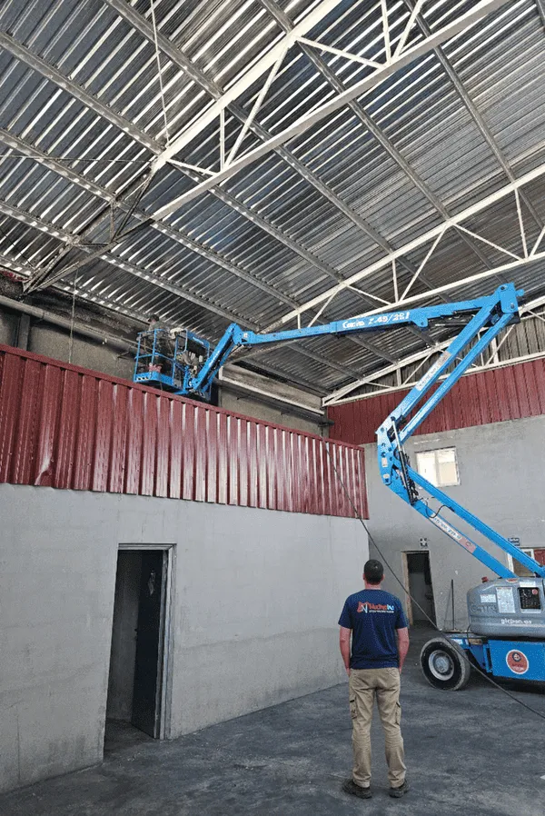

¿Cuánto cuesta limpiar una casa tras un incendio en Madrid?

Vamos al grano, que sé que es lo que ha venido a buscar. "¿Y esto cuánto me va a costar?". Es la pregunta más lógica del mundo y, sin embargo, encontrar una cifra clara por ahí es misión imposible. Así que aquí se la damos, con sus números y su tabla, aunque luego —ya le aviso— cada caso es un mundo.
Precios orientativos en Madrid
| Tipo de intervención | Plazo estimado | Precio orientativo |
|---|---|---|
| Una habitación o estancia | 1 día | desde 350 € |
| Vivienda media (70-90 m²) | 2-3 días | 900 € - 2.500 € |
| Vivienda grande o chalet | 3-5 días | 2.500 € - 6.000 € |
| Local, cocina industrial o nave | según superficie | presupuesto a medida |
*Cifras orientativas de mercado. El presupuesto final siempre depende del caso concreto. La valoración es gratuita.
¿De qué depende que sea más caro o más barato?
- Los metros afectados. No es lo mismo una cocina que un piso entero.
- El nivel de hollín. Un conato tizna; un incendio declarado lo impregna todo.
- Los materiales. La tarima, la escayola o el ladrillo visto piden más mano y más cuidado que una pared pintada.
- El olor. Si hay que tratar con ozono varias estancias, suma.
- El desescombro. Vaciar y retirar enseres no recuperables también cuenta.
Un consejo de los que valen: desconfíe del presupuesto dado "por teléfono y a ojo". Lo serio es una visita de valoración, que además debería ser gratuita, como la nuestra.
La pregunta importante: ¿lo pago yo?
Pues mire, normalmente no. En la mayoría de los casos lo asume el seguro de hogar, como le contamos en ¿el seguro cubre la limpieza tras un incendio?. Por eso insistimos tanto en el informe técnico: para que la compañía pague lo que tiene que pagar.
¿Y por qué Madrid tiene sus particularidades?
Porque el parque de vivienda es de todo menos uniforme. No cuesta lo mismo intervenir en un piso moderno de Sanchinarro, con pladur y acabados nuevos, que en una finca señorial del barrio de Salamanca con molduras de un siglo. Y en los municipios de la provincia —Getafe, Leganés, Alcalá— mandan los bloques de los años setenta. Cada uno, su técnica y su precio.
Resumiendo: hágase una idea con la tabla, pida una visita gratuita para el número exacto y recuerde que, con el seguro de por medio, probablemente esto le salga mucho más barato de lo que teme.
Tres casos reales para que se haga una idea
Las tablas están muy bien, pero a veces se entiende mejor con ejemplos. Le pongo tres situaciones tipo de las que vemos en Madrid, con sus números aproximados, para que aterrice la cifra:
Caso 1: conato en la cocina de un piso
Una sartén que se prende, llamas controladas rápido, pero la cocina y parte del salón llenos de hollín graso y olor por toda la casa. Limpieza de cocina, campana, salón y tratamiento de ozono en la vivienda: en torno a 800-1.200 €, normalmente cubiertos por el seguro. Dos o tres días de trabajo.
Caso 2: incendio en un dormitorio
Fuego más serio en una habitación, con daños estructurales menores y humo que ha viajado a toda la vivienda. Desescombro de lo irrecuperable, limpieza técnica de todas las estancias y ozono: entre 1.800 y 3.000 €. De tres a cinco días.
Caso 3: local de hostelería
Incendio de cocina en un bar, con campana y conductos muy afectados. Limpieza técnica y desengrase, más certificado para reabrir: presupuesto a medida, con prioridad absoluta en la rapidez para no perder más días de cierre de los imprescindibles.
Preguntas frecuentes
¿Cuánto cuesta limpiar una habitación tras un incendio?
De forma orientativa, desde unos 350 € una estancia individual, según el nivel de hollín y los materiales.
¿La limpieza post incendio la paga el seguro?
En la mayoría de los casos, sí. El seguro de hogar suele cubrir la limpieza y descontaminación dentro de la garantía de incendio.
¿El presupuesto y la visita son gratis?
En Nano Nex, sí. Hacemos una visita de valoración gratuita y entregamos un presupuesto cerrado antes de empezar.
¿Por qué varía tanto el precio?
Depende de los metros afectados, la cantidad de hollín, los materiales de la vivienda y si hace falta desescombro o tratamiento de olores.